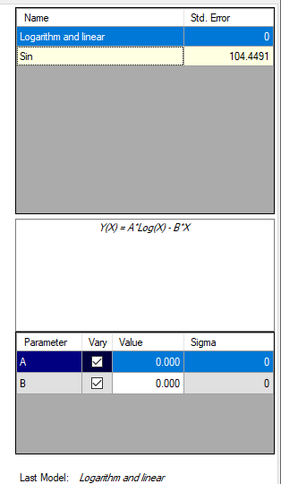
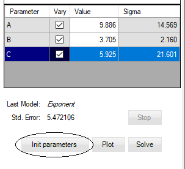
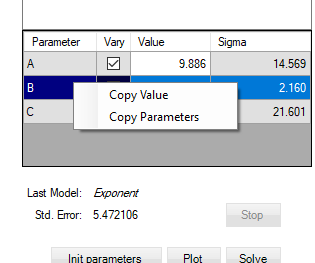

When model is selected its parameters and values are listed in the Model Parameters Table:

You can change the parameters values manually in order to find closes approximation to the data. Each time the values is changed the plot is updated.
You can update plot by clicking on Plot button or Ctrl + P keys. For library models you can click on Init parameters button just below the models parameters table:

Use the Solve button to perform automatic non-linear regression and improve the approximation. On each iteration the Std. Error will be updated. To stop the process click on Stop button.
Open the context menu by clicking on the right button of the mouse over the models table:

You can copy to clipboard only the value of selected parameter or all parameters.